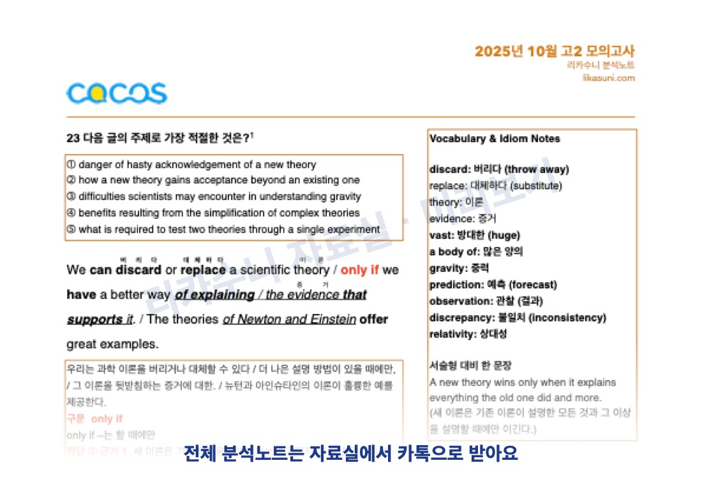

2025 고2 10모 영어 23번 문제 해설이에요. (2025년 10월 고2 전국연합학력평가 영어 · 주제 추론 · 정답 ②)
정답 근거, 오답 거르는 법, 구문(only if · only when · 가정법 과거완료 · B as well as A), 어휘를 정리했고 분석노트 pdf 받는 곳은 글 아래에 있어요.
안녕하세요, 이매동 코코스학원 리카수니 원장입니다.
학생 요청으로 만든 분석노트를 바탕으로 정리했어요. 시험지를 옆에 펴 놓고 보시면 더 잘 보여요.
· 시험: 2025년 10월 고2 전국연합학력평가 영어
· 번호: 23번 (글의 주제)
· 정답: ② how a new theory gains acceptance beyond an existing one (새 이론이 기존 이론을 넘어 어떻게 인정받는가)
새 과학 이론은 기존 이론이 설명하던 성과를 모두 설명하고, 기존 이론이 설명하지 못한 부분까지 설명할 때에만 인정받는다는 글이에요.
뉴턴의 중력 이론과 아인슈타인의 일반 상대성 이론이 예시로 나와요.
· 근거 1: 첫 문장에서 과학 이론은 '그 이론을 뒷받침하는 증거를 더 잘 설명하는 방법이 있을 때에만(only if)' 버리거나 대체할 수 있다고 해요.
· 근거 2: Still 뒤에서, 아인슈타인의 이론도 뉴턴 이론의 성과를 똑같이 잘 설명하지 못했다면 인정받지 못했을 거라고 해요.
· 최종 근거: 새 이론이 인정받으려면 아인슈타인 이론의 성과를 모두 설명하고, 그 이론이 통하지 않는 새 영역에서도 통해야 한다고 마무리해요.
→ '새 이론이 기존 이론을 넘어 어떻게 인정받는가' ②가 정답이에요.
· ① 새 이론을 성급하게 인정하는 위험 → 성급함의 위험이 아니라 '인정받는 조건'을 말해요.
· ③ 중력을 이해하는 어려움 → 중력은 예시의 소재일 뿐이에요.
· ④ 복잡한 이론을 단순화하는 이점 → 단순화가 아니라 더 넓은(broader) 설명이 핵심이에요.
· ⑤ 한 번의 실험으로 두 이론 검증 → 실험 이야기는 없어요.
주제 문제는 Still·but·however 같은 양보·역접 뒤 문장을 꼭 보세요. 이 글은 Still 뒤가 핵심이에요.

1) only if ~ (~할 때에만)
→ We can discard or replace a scientific theory only if we have a better way of explaining the evidence
2) 관계부사 where · only when (~했을 때 비로소)
→ cases where its predictions did not perfectly match observations / were explained only when Einstein developed ~
3) 가정법 과거완료 (~할 수 없었다면 …하지 못했을 것이다)
→ Einstein's theory would not have gained acceptance if it had not been able to explain these successes
4) 대동사 did · does
→ It did (= explained these successes equally well) / where Einstein's theory does not (work)
5) B as well as A (A뿐 아니라 B도)
→ match all the successes of Einstein's theory as well as work in new realms
· discard 버리다
· replace 대체하다
· a vast body of 방대한 양의
· gravity 중력
· prediction 예측
· observation 관찰 (결과)
· discrepancy 불일치
· relativity 상대성
· ignore 무시하다
· acceptance 인정, 수용
· broad 포괄적인
· go beyond ~을 넘어서다
· realm 영역
· hasty 성급한
· acknowledgement 인정
분석노트에 '서술형 대비 한 문장'(A new theory wins only when it explains everything the old one did and more. 새 이론은 기존 이론이 설명한 모든 것과 그 이상을 설명할 때에만 이긴다)과 영어 핵심 요약(Core Summary)을 해석과 함께 정리해 두었어요.
연결어로 주제를 찾는 법(대조 on the other hand, 양보 still·however, 반박 on the contrary)도 함께 정리했어요.
자료실 해설 페이지에서 정답 근거·선택지·구문·어휘를 화면으로 바로 볼 수 있어요.
인쇄용 분석노트 pdf(끊어 읽기·해석·구문·어휘 2쪽)는 카카오 로그인 후 카톡으로 받을 수 있고, 같은 회차 다른 번호도 요청할 수 있어요.
▶ 2025 고2 10모 영어 23번 해설
https://data.likasuni.com/moe/go2/2025-10/eng/23/
▶ 2025 고2 10모 영어 분석노트·변형문제·단어 pdf
https://data.likasuni.com/moe/go2/2025-10/eng/
영어 문제지·정답표와 듣기, 국어·수학·탐구 시험지도 회차 페이지에 모아 두었어요.
▶ 2025년 10월 고2 모의고사 전과목 문제·정답 pdf
https://data.likasuni.com/moe/go2/2025-10/
분당 이매동 코코스학원은 초등·중등·고등 영어와 수학을 가르쳐요.
모의고사·수능특강·내신 대비가 궁금하시면 편하게 문의해 주세요.
· 홈페이지: https://www.cocosedu.co.kr/
· 주소: 경기 성남시 분당구 판교로 476 2층